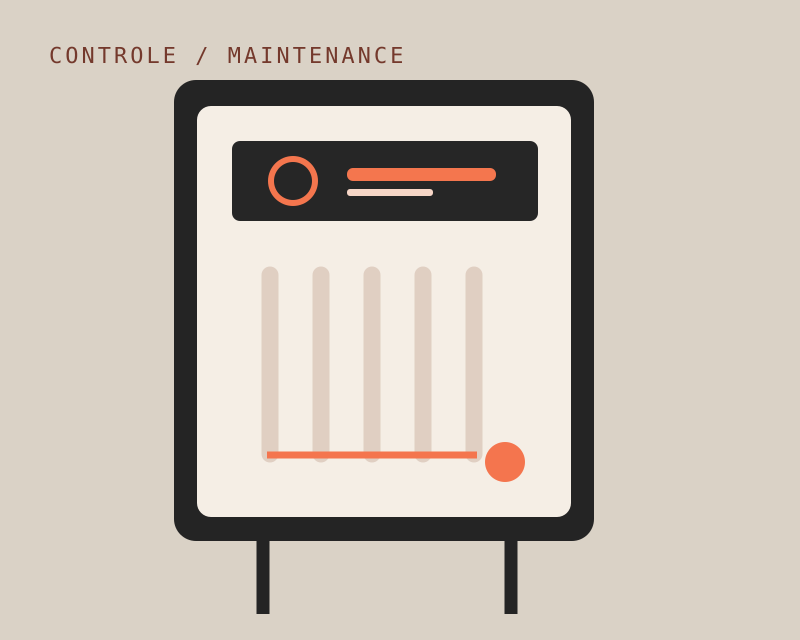

Décrire les symptômes
Préciser le type de chaudière et les anomalies constatées, sans démonter l’équipement.
Un fonctionnement anormal ou une chaudière à l’arrêt ? Faites évaluer votre installation par un professionnel du chauffage.
Étudier mon besoinUne panne de chaudière peut perturber le confort du logement et la production d’eau chaude. Mauvaise mise en route, fonctionnement inhabituel ou arrêt complet : les symptômes doivent être évalués avec méthode, sans manipulations hasardeuses.
Omnichauff propose l’entretien et le dépannage de chaudières à granulés dans le secteur de Valenciennes. L’équipe intervient pour diagnostiquer des dysfonctionnements et étudier les opérations nécessaires afin de retrouver un fonctionnement adapté.
Une approche progressive et des explications claires pour préparer chaque intervention.
Préciser le type de chaudière et les anomalies constatées, sans démonter l’équipement.
Échanger sur la situation pour identifier l’assistance à envisager.
Mettre en œuvre les contrôles ou réparations nécessaires dans les conditions prévues.


Un équipement de chauffage présente des contraintes spécifiques. Si vous remarquez un bruit inhabituel, une fuite ou un comportement anormal, évitez toute manipulation de réparation improvisée. En présence d’un danger, éloignez-vous et contactez les services compétents.
Pour une demande de dépannage, vous pouvez joindre Omnichauff au numéro indiqué sur cette page ou utiliser son formulaire officiel. Précisez le modèle de la chaudière et le symptôme rencontré afin de faciliter le premier échange.
Quelques réponses pour préparer votre échange avec l’équipe Omnichauff. Pour un cas particulier, une prise de contact reste nécessaire.
Oui. Le dépannage et l’entretien de chaudières à granulés constituent une rubrique dédiée du site officiel d’Omnichauff.
Il est préférable de ne pas intervenir sur les composants techniques ou les réglages sans qualification. Faites décrire la panne à un professionnel.
Appelez Omnichauff au 07 88 87 64 12 ou utilisez son formulaire de contact officiel.
Omnichauff est implantée au 521 Rue de la Broderie, 59235 Bersée. L’entreprise intervient notamment dans le secteur de Valenciennes et autour de Douai. Contactez l’équipe pour étudier la faisabilité de votre projet selon votre localisation.
Contacter Omnichauff ↗Parlons de votre installation et trouvons la bonne suite à donner à votre demande.